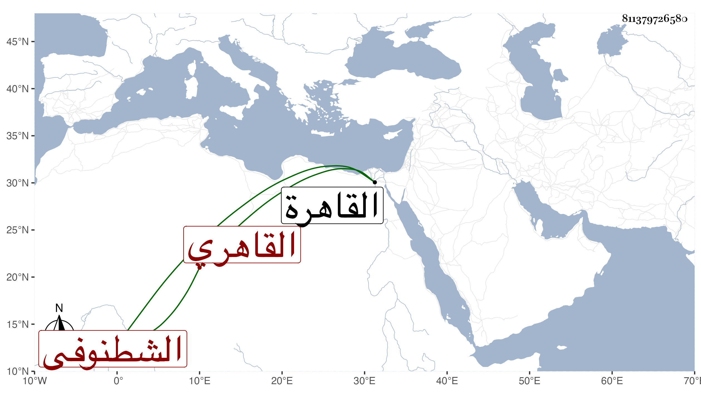

0902Sakhawi.DawLamic.ITO20230111-ara1.EIS1600.811379726580
Biography ID: 811379726580
أحمد بن صالح بن محمد شهاب الدين الشطنوفي القاهري والد الشمس محمد الآتي . ذكره شيخنا في الأنباء فقال العامل بمودع الحكم بالقاهرة وكان يجيد الكتابة والضبط وللجهد به جمال . مات في ليلة الجمعة حادي عشري ذي الحجة سنة إحدى وأربعين وتلاشى الأمر بعده جدا فلله الأمر ، وذكر لي ولده وهو من النجباء أن مولد والده ومض ... ، وقال غيره أنه جاز الثمانين رحمه الله .
